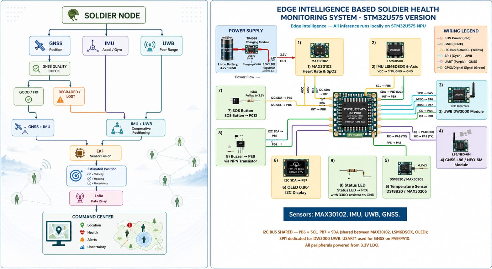

Problem Statement ID –
Problem Statement Title – Real time smart health monitoring system for soldiers
Theme –Defence and Biotech Integrated
PS Category –Hardware
Team ID –SIH26112
Team Name –Creathink

Problem Statement ID –
Problem Statement Title – Real time smart health monitoring system for soldiers
Theme –Defence and Biotech Integrated
PS Category –Hardware
Team ID –SIH26112
Team Name –Creathink

- Improved Soldier Safety: Continuous monitoring helps detect health emergencies early.
- Faster Rescue: Sends the soldier's location and health status to the command center during emergencies.
- Reliable Tracking: GNSS + IMU + UWB improves positioning when GNSS is unreliable.
- Better Battlefield Communication: LoRa and offline data storage reduce dependence on cellular networks.
- Saves Lives: Faster detection and rescue of injured soldiers.
- Improves Soldier Safety:Continuous health and location monitoring.
- Reduces Rescue Costs: Helps locate soldiers faster, reducing search time and resources.
- Cost-Effective: Uses low-power, scalable technologies that can be deployed across large teams.
- Supports Families & Society: Reduces preventable casualties and improves confidence in soldier safety.
Live location tracking of every soldier in GPS-denied and GPS-available areas via GNSS + IMU + UWB fusion.
Command center gets fixed position on map instantly via LoRa.
Auto-detection of abnormal vitals (HR, SpO2, temperature, fall).
Emergency alert with exact coordinates in 5 seconds.
Reduces search and rescue time from hours to minutes.
Better troop coordination and movement planning.
Geofencing alerts for restricted or danger zones.
- Triage Prioritization: Command knows whose vitals are critical → rescue most critical first
- Golden Hour Saved: Exact FIXED POSITION reduces helicopter / medical team search time by >60%
- Remote Diagnosis:Doctor at base can see ECG/Temp before soldier reaches hospital
- Reduces Frostbite / Heatstroke Deaths:Early temperature anomaly alerts
- *Lower Medical Waste –Continuous monitoring can reduce unnecessary tests and repeated diagnostic procedures, helping to minimize waste.
- Energy-Efficient Healthcare – Edge-based processing allows health data to be analyzed locally, reducing continuous data transmission and associated network energy consumption.
- Less E-Waste Through Efficient Design – Using low-power microcontrollers and sensors can reduce energy consumption and support longer device operating life.
•Analog devices-MAX30102 Datasheet
•TDK InvenSense-ICM-42688-P Datasheet
•Research literature on GMSS/IMU sensor fusion and EKF-based positioning
•
•
AI • Computer Vision • Deep Learning • Digital Safety